Detectores ópticos e infrarrojos
De la placa fotográfica al CCD: fotoeléctrico, transferencia de carga, calibración, rayos cósmicos y cámaras gigantes.
Después de que el telescopio concentra la luz llega al instrumento: el detector que convierte fotones en números. Hoy el estándar en óptico es el CCD; en IR, variantes con lectura distinta.
Placas fotográficas
Vidrio + emulsión de nitrato de plata. Hubble en Andrómeda (Cefeidas) → distancias extragalácticas. Tololo Supernova Survey: placas + blinker en Cerro Calán.
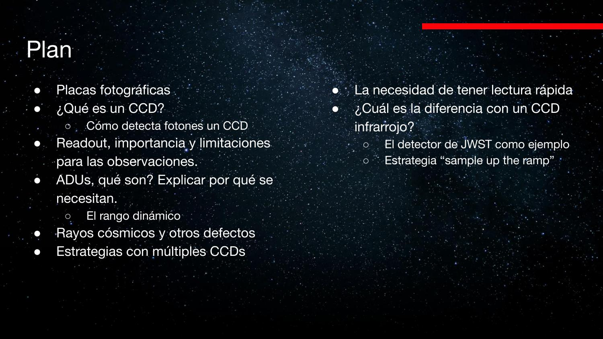
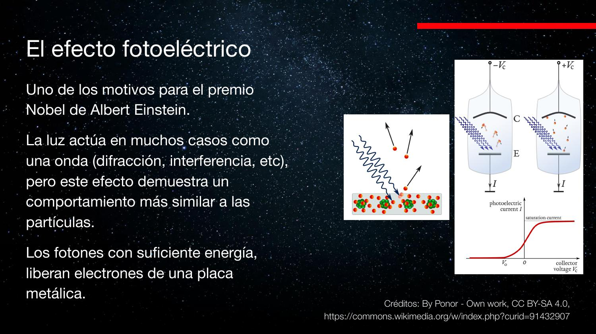
Limitación: saturación — no hay escala de «cuánto más negro». Aún útiles para movimientos propios con baselines de décadas.
Efecto fotoeléctrico
Einstein 1905: energía del electrón depende de ν, no de intensidad. Umbral: hν > φ (función de trabajo).
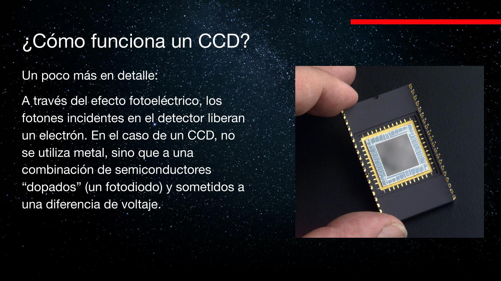
CCD: analogía de los baldes
Charge-Coupled Device: grilla de píxeles acumula carga (fotoelectrones); se desplaza fila a fila hasta un amplificador único (típico astronómico).
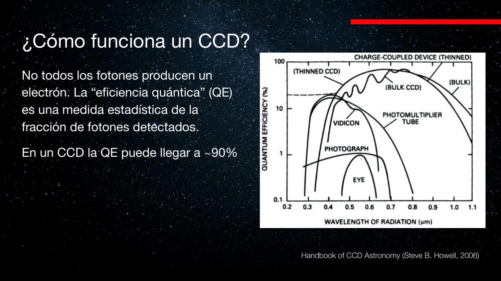
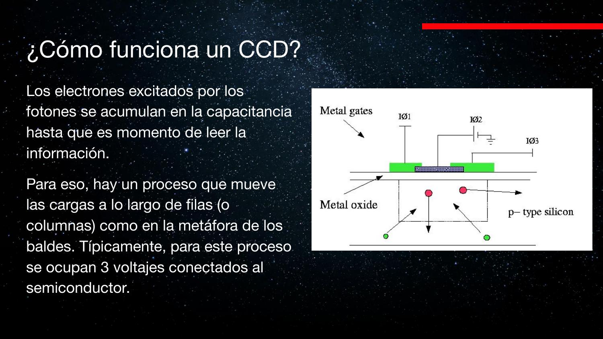
Silicio: absorción vs. λ
Longitud de absorción crece con λ. Capa demasiado delgada → pierde IR. Rango típico en tierra: ~300 nm – 1 μm (post-atmósfera).
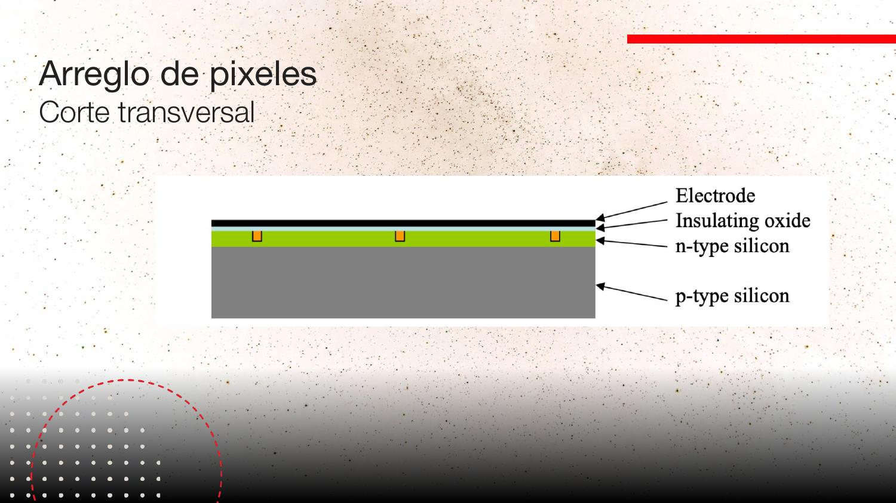
Eficiencia cuántica (EQ)
Fracción de fotones que generan electrón. CCD óptico: hasta ~90%. Ojo humano: ~1% en el pico. Placas ~similar al ojo.
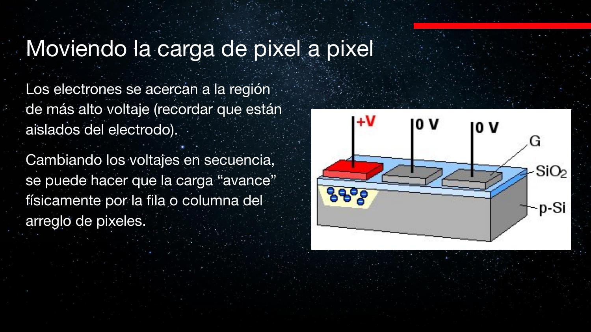
Trampa de carga y lectura
Voltajes en electrodos atrapan electrones en cada píxel (~10–20 μm). Lectura serial: filas → fila de transferencia → amplificador. Típico: 2048×1024.
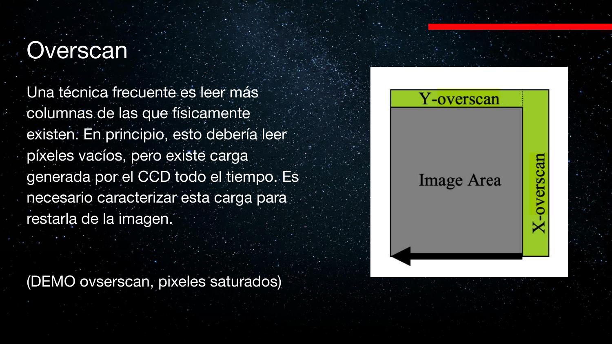
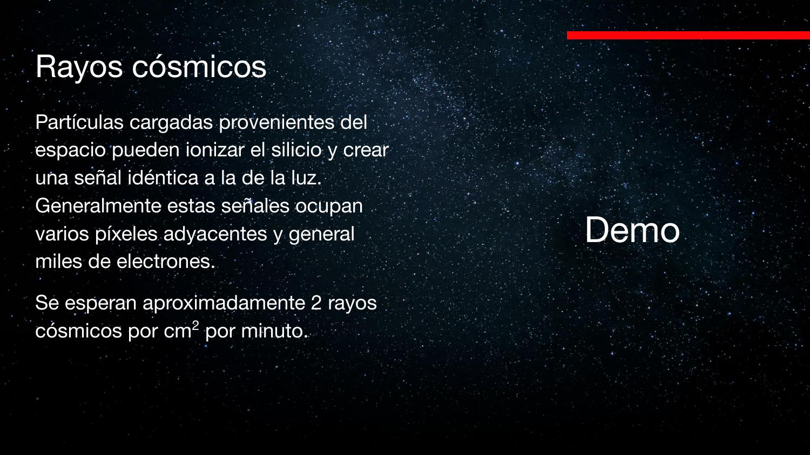
Bits, rango dinámico y FITS
Astronomía usa 16–64 bits (no 8 como JPG). FITS: datos + header con metadatos (BITPIX, NAXIS, etc.).
Contraste quasar + nebulosa difusa en 255 niveles → pérdida de información. Mage (Las Campanas): modos slow/turbo de lectura.
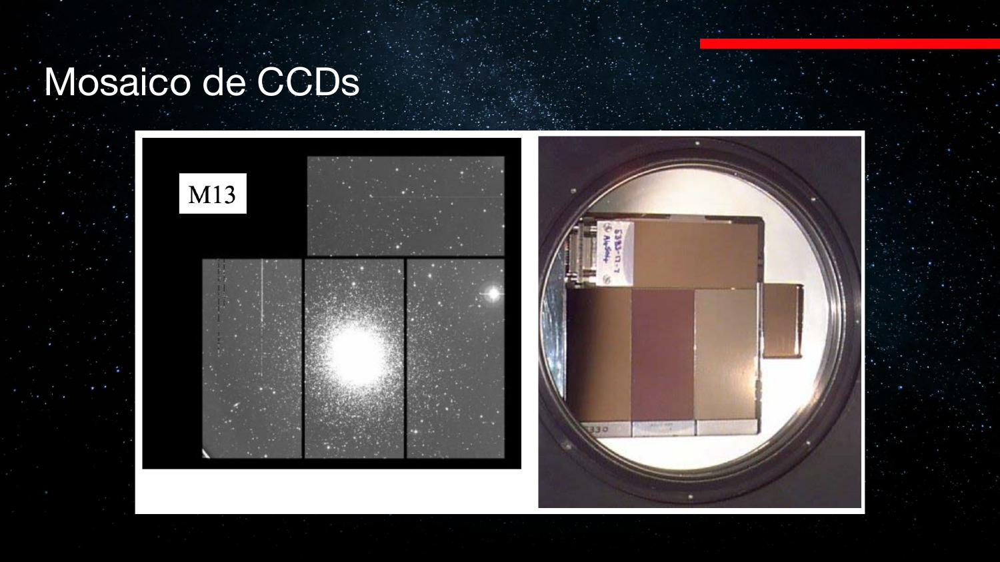
Dark current y overscan
CCD enfriado (N₂ líquido) reduce electrones térmicos. Tras leer todos los píxeles, se sigue leyendo filas «vacías» → overscan mide bias/dark (~1300 ADU en ejemplo de clase).
Saturación: 2¹⁶−1 = 65535 ADU máximo con 16 bits.
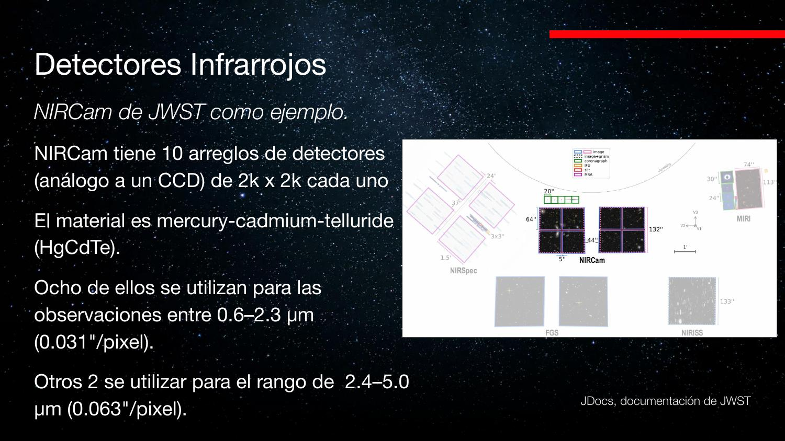
Rayos cósmicos y dithering
~2 cm⁻² min⁻¹ en superficie. Un RC ioniza varios píxeles → raya brillante. Solución: múltiples exposiciones + rechazo de outliers. Columnas muertas: un píxel malo arruina toda la columna → mover telescopio (dither).
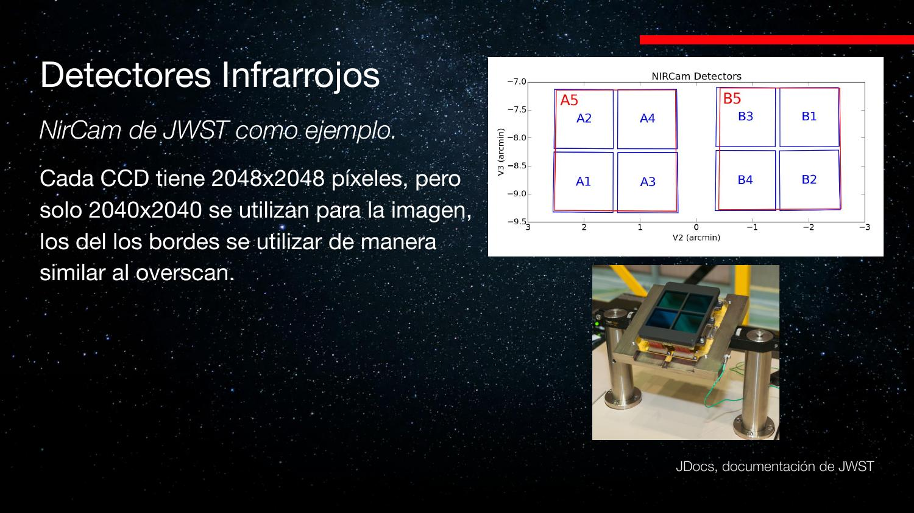
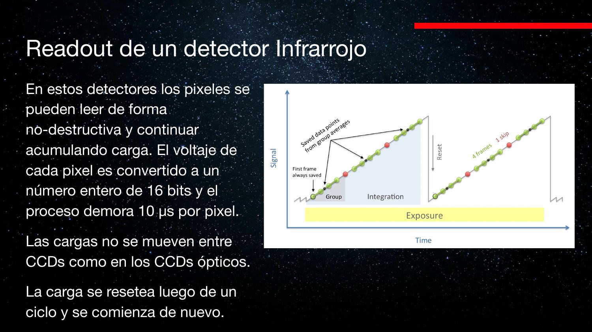
Vera Rubin y detectores IR
Vera Rubin: 200 CCD × 16 Mpx, 16 amplificadores cada uno, lectura total ~2 s. JWST/NIRCam: 10 detectores IR; píxeles físicos más grandes en λ larga; overscan físico (píxeles tapados); lectura diferencial (tasa dQ/dt).
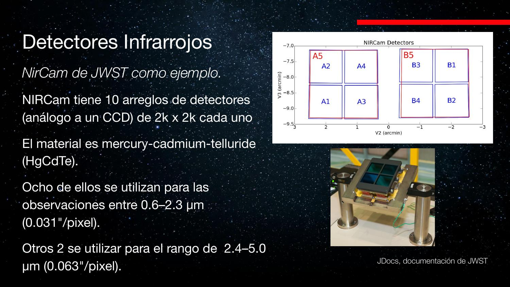
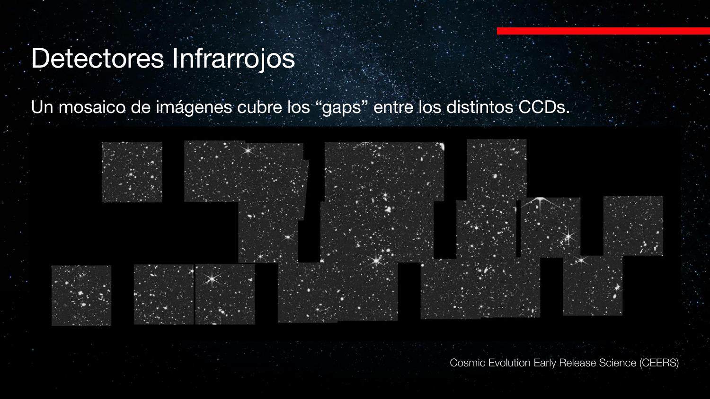
| Concepto | Nota |
|---|---|
| CCD | Transferencia serial de carga; amplificador central |
| EQ | ~90% CCD vs. ~1% ojo |
| Overscan | Mide dark/bias sin iluminación |
| FITS | Formato estándar astronómico |
| Flat field | Corrección de sensibilidad pixel a pixel |
| Dither | Recuperar datos tras píxeles muertos |
Exámenes de práctica
10 exámenes de 5 preguntas (3 alternativas autocorregibles + 2 escritas).